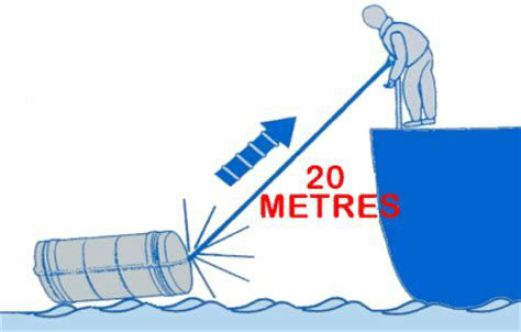

A JET AVEC RAMPE
Ce type de système permet à l'engin de sauvetage d'être mis à l'eau en glissant sur une rampe sous l'effet de sont propre poids.
Le largage peut être effectué de manière manuelle ou automatique.
automatique : dispositif de largage hydrostatique.
manuel : action sur un croc à échappement.
Un croc à échappement permet de libérer l'amarre de saisir du radeau.
Le gonflage se produit grâce à l'action sur un bout de déclenchement qui doit rester amarré au navire dans un premier temps

Sur certains modèle c'est la chute à l'eau qui provoque le gonflage.
Les embarcation de sauvetage fermées peuvent également être larguées depuis une rampe. (free fall)